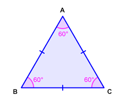

Suma de Ángulos de un Polígono
"Descubriendo el Secreto de los Ángulos: La Magia de los Polígonos"
Presentadores:
* ACHIHUAMAN CANCHARI, Anghela * ALVARADO MACHA, Elmer
"Descubriendo el Secreto de los Ángulos: La Magia de los Polígonos"
Presentadores:
* ACHIHUAMAN CANCHARI, Anghela * ALVARADO MACHA, Elmer
¿Cómo se calcula la suma de los ángulos internos de un polígono de N lados?
a) N × 90°
b) ( N − 2 ) × 180°
c) N × 180°
abcdefghijklmnñopqrstuvwxyz
Por favor active JavaScript para poder jugar a este juego.

Para un polígono con N lados, la suma de los ángulos internos se calcula así:
 S = ( n − 2 ) × 180°
S = ( n − 2 ) × 180°
N : número de lados del polígono.
S : suma total de los ángulos internos.
TRIÁNGULO EQUILÁTERO

S = ( N - 2) x 180° 
S = ( 3 - 2) x 180°
S = 1 x 180°
S = 180° ----- Rpta
CUADRADO

S= ( N - 2 ) x 180°
S= ( 4 - 2 ) x 180°
S= 2 x 180°
S = 360° ------ Rpta
OCTÁGONO


S = ( N - 2) x 180°
S = ( 8 - 2) x 180°
S = 6 x 180°
S =1080° ----------Rpta
METACOGNICIÓN
1. ¿Cómo calculaste la suma de ángulos internos de diferentes polígonos?
2. ¿Qué estrategias te ayudaron a recordar la fórmula y su aplicación?
3. ¿Qué desafíos encontraste al trabajar con la suma de ángulos en polígonos?
Obra publicada con Licencia Creative Commons Reconocimiento 3.0